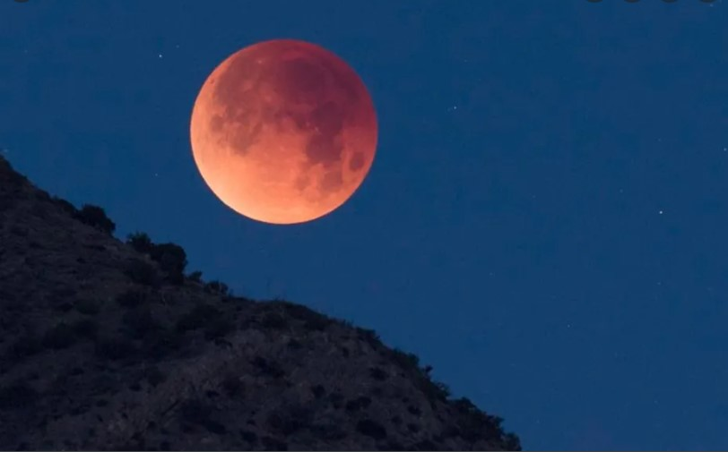

Eclipse de lune
La prochaine éclipse lunaire est prévue le mardi 8 novembre 2022. Le début de cette éclipse aura lieu avec l'entrée dans la pénombre à 9h02 (heure de Paris, 8h02 UTC). Le maximum de l'éclipse est prévu pour 11h59.
Lire la suite...Une éclipse lunaire, ou éclipse de Lune1,2,3,
est une éclipse se produisant à chaque fois que la Lune se
trouve dans l'ombre de la Terre. D'un point de vue lunaire,
il s'agit d'une occultation du Soleil par la Terre. Cela se
produit uniquement lorsque la Lune est éclairée, et quand le
Soleil, la Terre et la Lune sont alignés ou proches de l’être.
Le type et la taille d'une éclipse lunaire dépendent de la
position relative de la Lune par rapport à ses nœuds orbitaux. [Voir moins]